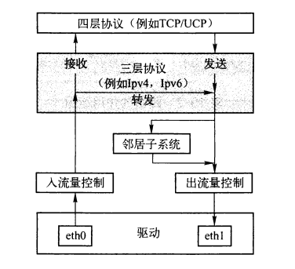
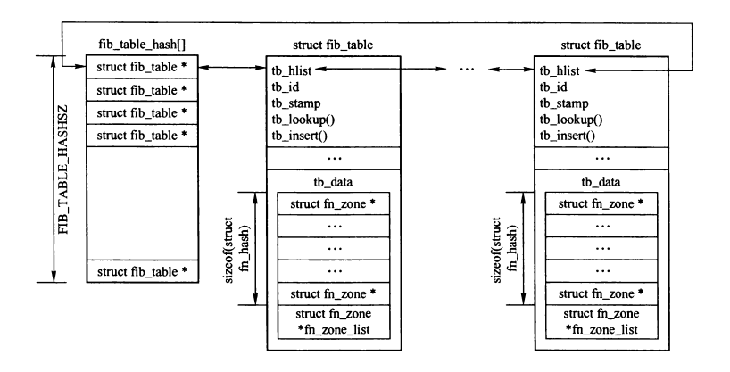
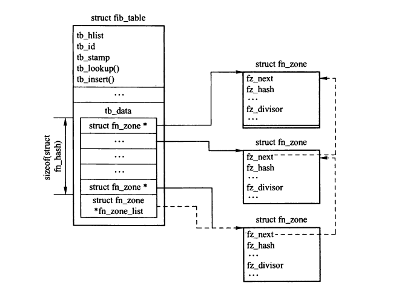
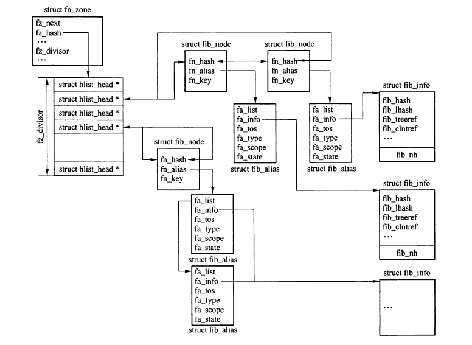
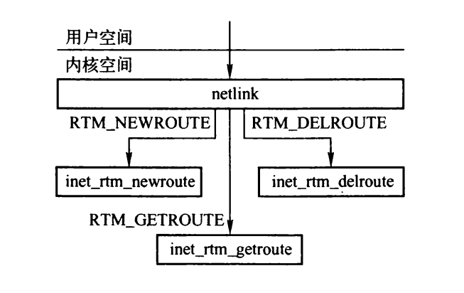
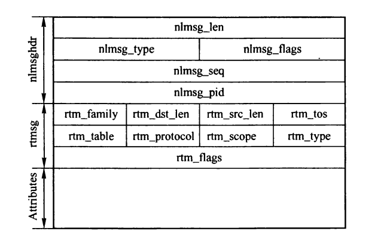
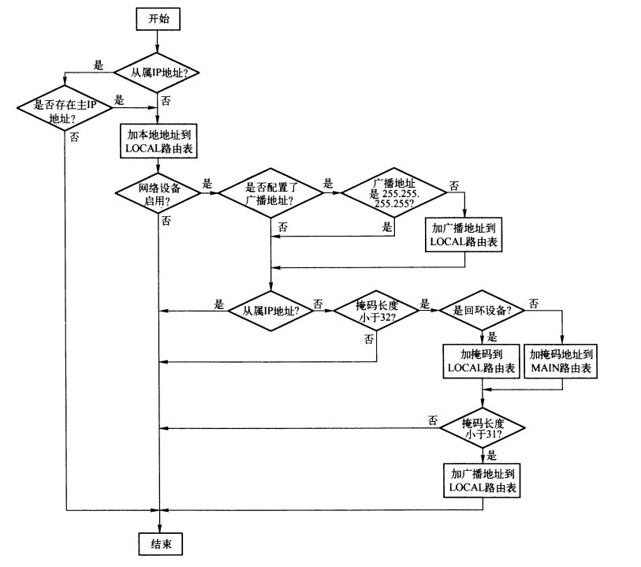
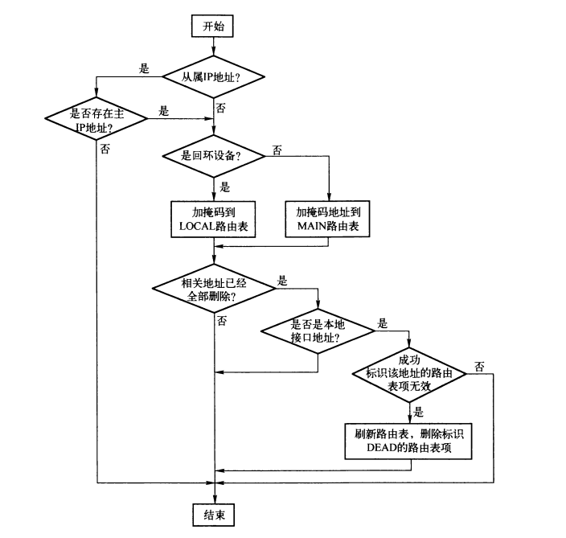

路由表
Table of Contents
1. 路由表
路由子系统的核心是转发信息库（Forwarding Information Base, FIB），即路由表。
路由表用来存储以下信息：
- 用来确定输入数据报是到本机还是转发的信息;
- 如果是转发，则是正确转发数据报所需的信息;
- 用来确定输出数据报的输出设备的信息;

Figure 1: 路由子系统和其他网络子系统的关系
1.1. 路由的要素
- 路由表
- metrics：路由上配置的相关度量值
- 路由作用范围
- Host 路由的目的地址为本地主机
- Link 路由的目的地址问本地网络
- Universe 路由的目的地址超过一跳
- 默认网关
1.2. 特殊路由
路由子系统有两张特殊的路由表：
- 用于本地地址的路由表，存储了所有的本地地址，如果该表中能查到匹配表项，代表是发送给本机的。
- 用于所有其他的路由，路由表项有用户手工静态配置或有路由协议动态配置。
路由查找时先扫描本地路由表，没查到，再去查另一路由表。
1.3. 路由缓存
路由缓存分为两部分：一部分是协议相关的缓存，每个元素被定义为一个有具体协议字段组成的集合; 另一部分是与协议无关的缓存，通常成为DST，嵌套在缓存框架中，之存储与协议无关的协议。
如果启用了策略路由，系统中会有多张独立的路由表，但是只有一个路由缓存。
路由表使用的是连续地址的集合（子网），而路由缓存与单个IP地址相关联。
2. 路由表组成结构
2.6.20版本的内核支持 FIB_HASH 和 FIB_TRIE 两种路由查找算法。下面以FIB_HASH算法为例。
路由表通过 fib_table 结构来描述，所有的 fib_table 结构链接在全局散列表 fib_table_hash 中。

Figure 2: fib_table_hash散列表
路由表初始化函数为 fib_hash_init，初始化时会将fib_table结构和fn_hash结构一起分配，fib_table 结构主要包含了路由表ID和一些管理路由表的函数，其tb_data成员是零长度数组，指向紧接的 fn_hash 结构， fn_hash 结构包含了一个由 33 个 fn_zone 结构指针组成的向量，用来把路由表项按照木彼岸地址掩码的长度分成33个区，所有非空的fn_zone结构又通过其fz_next字段和fn_hash结构的fn_zone_list字段链接成一个循环单链表，fn_zone_list指向掩码最短的那个fn_zone结构，掩码地址最长的fn_zone结构的fz_next字段指向fn_zone_list。

Figure 3: fib_table中的fn_hash结构
上图中，每个fn_zone结构代表了路由表中所有同一掩码长度的表项集合，为进一步划分该集合，fn_zone结构的fz_hash字段指向一个长度为 fz_divisor字段 的HASH表，用于存储 fib_node 结构，冲突的 fib_node 结构通过其 fn_hash 字段链接为双向链表。
具体的路由表项是由 fib_alias 和 fib_info 构成，fib_info中是一些可能被多个 fib_alias 共享的信息。
每个网段对应一个 fib_node 实例，网段使用其 fn_key 字段来表示，例如，对于子网 10.1.1.0/24，fn_key为10.1.1。 注意：fib_node 和网段相关，而不是和路由项相关，多条路由表项可能有相同的网段。
相同网段的路由表项（fn_key相同）共享一个fib_node。每条路由表项有各自的fib_alias结构（例如网段相同，但是TOS值不同的路由表项）。每个fib_alias实例与一个存储真正路由信息的fib_info结构相关联。
对于一个fib_node实例，相关的fib_alias实例链表按照IP的TOS（fa_tos字段）值递增排列。 fa_tos相同的fib_alias实例按照关联的fib_info结构的fib_protocol字段递增排列。
fib_alias与fib_info之间的关联不是一对一，多个fib_alias结构可能共享一个fib_info结构。例如：五条到不同目的网络的路由项使用用同一个下一跳网关，那么就有五个 fib_node 结构和五个 fib_alias 结构，但只有一个 fib_info 结构。

Figure 4: fn_zone结构
在上图中：
- 存在四条路由表项（四个fib_alias）。
- 四条路由表项是到三个不同的网段（三个fib_node实例），有两个fib_alias实例共享一个fib_node实例。
- 四条路由表项中有两条共享同一个下一跳路由器，因此有两个fib_alias结构的fa_info字段指向同一个fib_info结构。
2.1. fib_table结构
每个路由表实例都对应一个fib_table结构的实例。
struct fib_table { struct hlist_node tb_hlist; //将各个路由表链接为一个双向链表 u32 tb_id; //路由表标识 unsigned tb_stamp; //从路由表中搜索路由表项，FIB_HASH算法中为 fn_hash_lookup() int (*tb_lookup)(struct fib_table *tb, const struct flowi *flp, struct fib_result *res); //向路由表中插入给定的路由表项 int (*tb_insert)(struct fib_table *, struct fib_config *); //删除路由表项 int (*tb_delete)(struct fib_table *, struct fib_config *); //输出路由表内容 int (*tb_dump)(struct fib_table *table, struct sk_buff *skb, struct netlink_callback *cb); //删除设置有 RTNH_F_DEAD 标志的fib_info结构实例。 int (*tb_flush)(struct fib_table *table); //选择一条默认路由 void (*tb_select_default)(struct fib_table *table, const struct flowi *flp, struct fib_result *res); //路由表项的散列表起始地址。 unsigned char tb_data[0]; };
2.2. fn_zone结构
每个fn_zone结构实例，代表一组有着相同目的地址掩码长度的路由表项散列表。
struct fn_zone { struct fn_zone *fz_next; /* 链接fn_zone结构的链表，链表首部在fn_hash结构的fn_zone_list字段中 */ struct hlist_head *fz_hash; /* 指向该fz_zone中的路由项的散列表*/ int fz_nent; /* 散列表中 fib_node 实例的数目 */ int fz_divisor; /* fz_hash散列表的容量 */ u32 fz_hashmask; /* (fz_divisor - 1) */ #define FZ_HASHMASK(fz) ((fz)->fz_hashmask) int fz_order; /* 网络掩码 fz_mask 的长度 */ __be32 fz_mask; /* 用fz_order构造得到的网络掩码*/ #define FZ_MASK(fz) ((fz)->fz_mask) };
2.3. fib_node结构
fib_node结构的实例代表一个唯一的目的网络的路由表项，即同一个子网的所有路由表项共享的信息。
目的网络相同，但是其他配置参数不同的路由表项共享同一个 fib_node 实例，所以fib_node实例可能存在一个或多个路由表项。
struct fib_node { //将散列表中同一个桶内的所有fib_node实例链接为双链表 struct hlist_node fn_hash; //指向fn_alias结构实例的链表 struct list_head fn_alias; //将IP地址和路由项的netmask操作后得到，用作查找路由表的条件 __be32 fn_key; };
2.4. fib_alias结构
fib_alias代表一条路由表项，目的地址相同但其他配置参数不同的表项共享 fib_node 实例。
struct fib_alias { //共享同一个fib_node实例的所有fib_alias实例链接在一起。 struct list_head fa_list; struct rcu_head rcu; //指向fib_info实例，fib_info实例中存储这如何处理与该路由项匹配的数据报信息。 struct fib_info *fa_info; //路由的服务类型 u8 fa_tos; //路由表项类型 u8 fa_type; //路由表作用范围 u8 fa_scope; //一些标志位图 u8 fa_state; };
2.5. fib_info结构
fib_node结构和fib_alias结构的组合可以标识一条路由表项，其中存储了部分相关信息，还有一部分信息存储在fib_info结构中。
/* * This structure contains data shared by many of routes. */ struct fib_info { //用于将fib_info实例插入fib_info_hash全局散列表 struct hlist_node fib_hash; //用于将fib_info实例插入fib_info_laddrhash全局散列表（路由表项有一个首选源地址时才插入） struct hlist_node fib_lhash; //持有该fib_info实例的fib_node数目 int fib_treeref; //由于路由查找成功而被持有的计数 atomic_t fib_clntref; //正在删除标志 int fib_dead; unsigned fib_flags; //设置路由的协议 int fib_protocol; //首选源IP地址 __be32 fib_prefsrc; //路由优先级，值越小优先级越高 u32 fib_priority; //与路由相关的一族度量值 u32 fib_metrics[RTAX_MAX]; #define fib_mtu fib_metrics[RTAX_MTU-1] #define fib_window fib_metrics[RTAX_WINDOW-1] #define fib_rtt fib_metrics[RTAX_RTT-1] #define fib_advmss fib_metrics[RTAX_ADVMSS-1] //可用下一跳的数量 int fib_nhs; int fib_power; u32 fib_mp_alg; struct fib_nh fib_nh[0]; #define fib_dev fib_nh[0].nh_dev };
| Metric | 描述 |
|---|---|
| RTAX_LOCK | 不是度量值，用比特位置图标识各种度量值的上索状态 |
| RTAX_MTU | 路径MTU |
| RTAX_WINDOW | 最大通告窗口 |
| RTAX_RTT | 往返时间 |
| RTAX_RTTVAR | RTT方差 |
| RTAX_SSTHRESH | 慢启动门限值 |
| RTAX_CWND | 拥塞窗口 |
| RTAX_ADVMSS | 最大段长度 |
| RTAX_REORDERING | 当前的reordering |
| RTAX_HOPLIMIT | 默认生存时间 |
| RTAX_INITCWND | 初始拥塞窗口 |
2.6. fib_nh结构
fib_nh结构存放着下一跳路由的地址（nh_hw）。
struct fib_nh { //路由表项输出网络设备 struct net_device *nh_dev; //用于将nh_hash链接到散列表 struct hlist_node nh_hash; //指向所属的路由表项的fib_info结构 struct fib_info *nh_parent; unsigned nh_flags; //路由范围 unsigned char nh_scope; int nh_weight; int nh_power; //基于策略路由的分类标签 __u32 nh_tclassid; //该路由表项的输出网络设备索引 int nh_oif; //路由项的网关地址 __be32 nh_gw; };
3. 路由表初始化
fib_hash_init()函数执行路由表的初始化。 ip_fib_init()执行IP路由子系统的初始化，其中会调用fib_hash_init来分别创建 ip_fib_main_table 和 ip_fib_local_table 表。
#ifdef CONFIG_IP_MULTIPLE_TABLES //配置策略路由 struct fib_table * fib_hash_init(u32 id) #else //如果没有配置策略路由，则使用_init宏 struct fib_table * __init fib_hash_init(u32 id) #endif { struct fib_table *tb; if (fn_hash_kmem == NULL) //分配fib_node内存池 fn_hash_kmem = kmem_cache_create("ip_fib_hash", sizeof(struct fib_node), 0, SLAB_HWCACHE_ALIGN, NULL, NULL); if (fn_alias_kmem == NULL) //分配fib_alias内存池 fn_alias_kmem = kmem_cache_create("ip_fib_alias", sizeof(struct fib_alias), 0, SLAB_HWCACHE_ALIGN, NULL, NULL); //分配fib_table和fn_hash结构 tb = kmalloc(sizeof(struct fib_table) + sizeof(struct fn_hash), GFP_KERNEL); //初始化路由表成员 tb->tb_id = id; tb->tb_lookup = fn_hash_lookup; tb->tb_insert = fn_hash_insert; tb->tb_delete = fn_hash_delete; tb->tb_flush = fn_hash_flush; tb->tb_select_default = fn_hash_select_default; tb->tb_dump = fn_hash_dump; memset(tb->tb_data, 0, sizeof(struct fn_hash)); return tb; }
4. netlink接口

Figure 5: neilink接口
4.1. netlink路由表项消息结构

Figure 6: 路由表项的netlink消息
nlmsghdr 为netlink消息首部（四字节对齐），rtmsg是路由消息。
- rtm_family 路由表项所属地址族
- rtm_dst_len 目的地址掩码长度
- rtm_src_len 源地址掩码长度
- rtm_tos 路由的服务类型
- rtm_table 路由表ID
- rtm_protocol 路由的特性或则和标志
- rtm_scope 路由寻址范围
- rtm_type 路由表项类型
- rtm_flags 标志
- Attribute 属性，标识配置的各种值
| 属性 | 描述 |
|---|---|
| RTA_UNSPEC | hulve |
| RTA_DST | 路由项的目的地址 |
| RTA_SRC | 路由项的源地址 |
| RTA_IIF | 路由项的输入网络设备索引 |
| RTA_OIF | 路由项的输出网络设备索引 |
| RTA_GATEWAY | 路由项的网关地址 |
| RTA_PRIORITY | 路由项的优先级 |
| RTA_PREFSRC | 首选源地址 |
| RTA_METRICS | 路由和协议相关的度量值（例RTT、PMTU等） |
| RTA_MULTIPATH | 多路径路由下一跳的属性值 |
| RTA_PROTOINFO | 居于策略路由的防火墙属性值 |
| RTA_FLOW | 居于策略路由的分类标签信息 |
| RTA_CACHEINFO | 缓存的路由信息 |
4.2. inet_rtm_newroute()
int inet_rtm_newroute(struct sk_buff *skb, struct nlmsghdr* nlh, void *arg) { struct fib_config cfg; struct fib_table *tb; int err; //从netlink消息中获取用于配置路由表项的信息 err = rtm_to_fib_config(skb, nlh, &cfg); //根据指定的路由表ID,获取路由表，如果不支持策略路由，则返回local或者main,否则查找fib_table_hash散列表 tb = fib_new_table(cfg.fc_table); //添加路由表项到路由表 err = tb->tb_insert(tb, &cfg); }
4.3. inet_rtm_delroute()
int inet_rtm_delroute(struct sk_buff *skb, struct nlmsghdr* nlh, void *arg) { struct fib_config cfg; struct fib_table *tb; int err; err = rtm_to_fib_config(skb, nlh, &cfg); tb = fib_get_table(cfg.fc_table); err = tb->tb_delete(tb, &cfg); }
5. 获取指定路由表
fib_new_table() 用于获取指定路由表。
struct fib_table *fib_new_table(u32 id) { struct fib_table *tb; unsigned int h; if (id == 0) id = RT_TABLE_MAIN; tb = fib_get_table(id); if (tb) return tb; //未找到则创建路由表 tb = fib_hash_init(id); if (!tb) return NULL; h = id & (FIB_TABLE_HASHSZ - 1); hlist_add_head_rcu(&tb->tb_hlist, &fib_table_hash[h]); return tb; }
6. 路由表项的添加
fn_hash_insert() 函数用来添加新的路由表项。根据netlink消息首部的 nlmsg_flags 字段，分为插入新的路由项，尾部追加路由项，首部追加路由项，替换路由项等操作，这些都通过fn_hash_insert实现。
添加路由表项时，如果存在目的地址和TOS值都相同的路由表项，并且添加标志为NLM_F_EXCL，此时返回错误，只有标志为NLM_F_REPLACE时才能处理。
插入路由表项后，如果fz_hash散列表容量发生变化，则通过fn_reshash_zone 重建散列表。
struct fib_config { u8 fc_dst_len; //目的地址掩码长度 u8 fc_tos; //路由的服务类型 u8 fc_protocol; //路由特性 u8 fc_scope; //路由范围 u8 fc_type; //路由表项类型 /* 3 bytes unused */ u32 fc_table; //路由表ID __be32 fc_dst; //路由项的目的地址 __be32 fc_gw; //路由项的网关地址 int fc_oif; //路由项输出网络设备索引 u32 fc_flags; u32 fc_priority; //路由项优先级 __be32 fc_prefsrc; //首选源地址 struct nlattr *fc_mx; //路由和协议相关的度量值 struct rtnexthop *fc_mp; //多路径路由下一跳的属性值 int fc_mx_len; int fc_mp_len; u32 fc_flow; //基于策略路由的分类标签 u32 fc_mp_alg; //多路径缓存算法 u32 fc_nlflags; //操作模式 struct nl_info fc_nlinfo; //配置路由的neilink数据包信息 };
| fc_nlflags | 描述 |
|---|---|
| NLM_F_REPLACE | 存在则替换 |
| NLM_F_EXCL | 存在则不添加 |
| NLM_F_CREATE | 不存在则创建 |
| NLM_F_APPEND | 追加到最后 |
static int fn_hash_insert(struct fib_table *tb, struct fib_config *cfg) { struct fn_hash *table = (struct fn_hash *) tb->tb_data; struct fib_node *new_f, *f; struct fib_alias *fa, *new_fa; struct fn_zone *fz; struct fib_info *fi; u8 tos = cfg->fc_tos; __be32 key; int err; if (cfg->fc_dst_len > 32) //掩码长度是否有效 return -EINVAL; //根据掩码长度获取 fn_zone fz = table->fn_zones[cfg->fc_dst_len]; if (!fz && !(fz = fn_new_zone(table, cfg->fc_dst_len))) //不存在则创建 return -ENOBUFS; //获取目的网络对应的fib_node实例的key key = 0; if (cfg->fc_dst) { if (cfg->fc_dst & ~FZ_MASK(fz)) return -EINVAL; key = fz_key(cfg->fc_dst, fz); } //创建fib_info结构实例 fi = fib_create_info(cfg); //fz_hash散列表容量如果变化，则需要重建散列表 if (fz->fz_nent > (fz->fz_divisor<<1) && fz->fz_divisor < FZ_MAX_DIVISOR && (cfg->fc_dst_len == 32 || (1 << cfg->fc_dst_len) > fz->fz_divisor)) fn_rehash_zone(fz); //根据key值获取fib_node实例 f = fib_find_node(fz, key); if (!f) fa = NULL; else fa = fib_find_alias(&f->fn_alias, tos, fi->fib_priority); //根据tos和优先级查找fib_alias实例。 /* Now fa, if non-NULL, points to the first fib alias * with the same keys [prefix,tos,priority], if such key already * exists or to the node before which we will insert new one. * * If fa is NULL, we will need to allocate a new one and * insert to the head of f. * * If f is NULL, no fib node matched the destination key * and we need to allocate a new one of those as well. */ if (fa && fa->fa_tos == tos && //tos值相同 且优先级相同 fa->fa_info->fib_priority == fi->fib_priority) { struct fib_alias *fa_orig; err = -EEXIST; if (cfg->fc_nlflags & NLM_F_EXCL) //指定该标志代表存在则不创建 goto out; if (cfg->fc_nlflags & NLM_F_REPLACE) { //存在则进行替换 struct fib_info *fi_drop; u8 state; write_lock_bh(&fib_hash_lock); fi_drop = fa->fa_info; fa->fa_info = fi; fa->fa_type = cfg->fc_type; fa->fa_scope = cfg->fc_scope; state = fa->fa_state; fa->fa_state &= ~FA_S_ACCESSED; fib_hash_genid++; write_unlock_bh(&fib_hash_lock); fib_release_info(fi_drop); if (state & FA_S_ACCESSED) rt_cache_flush(-1); return 0; } /* Error if we find a perfect match which * uses the same scope, type, and nexthop * information. */ fa_orig = fa; fa = list_entry(fa->fa_list.prev, struct fib_alias, fa_list); list_for_each_entry_continue(fa, &f->fn_alias, fa_list) { //遍历进行全匹配 if (fa->fa_tos != tos) break; if (fa->fa_info->fib_priority != fi->fib_priority) break; if (fa->fa_type == cfg->fc_type && fa->fa_scope == cfg->fc_scope && fa->fa_info == fi) goto out; //匹配成功，则存在相同的路由项，无需处理 } if (!(cfg->fc_nlflags & NLM_F_APPEND)) //没有指定 NLM_F_APPEND标志 fa = fa_orig; } err = -ENOENT; if (!(cfg->fc_nlflags & NLM_F_CREATE)) //不存在NLM_F_CREATE标志，则不能添加 goto out; err = -ENOBUFS; new_fa = kmem_cache_alloc(fn_alias_kmem, GFP_KERNEL);//分配fib_alias实例 new_f = NULL; if (!f) { new_f = kmem_cache_alloc(fn_hash_kmem, GFP_KERNEL); //分配fib_node实例 INIT_HLIST_NODE(&new_f->fn_hash); INIT_LIST_HEAD(&new_f->fn_alias); new_f->fn_key = key; f = new_f; } new_fa->fa_info = fi; new_fa->fa_tos = tos; new_fa->fa_type = cfg->fc_type; new_fa->fa_scope = cfg->fc_scope; new_fa->fa_state = 0; /* * Insert new entry to the list. */ write_lock_bh(&fib_hash_lock); if (new_f) fib_insert_node(fz, new_f); //将新的fib_node插入链表 list_add_tail(&new_fa->fa_list, //将新的fib_alias插入链表 (fa ? &fa->fa_list : &f->fn_alias)); fib_hash_genid++; write_unlock_bh(&fib_hash_lock); if (new_f) fz->fz_nent++; //更新路由项对应的zone中的路由项数目 rt_cache_flush(-1); //刷新路由缓存表 //通过netlink通知 RTM_NEWROUTE事件 rtmsg_fib(RTM_NEWROUTE, key, new_fa, cfg->fc_dst_len, tb->tb_id, &cfg->fc_nlinfo); return 0; }
7. 路由表项的删除
fn_hash_delete()实现删除一条路由表项。
static int fn_hash_delete(struct fib_table *tb, struct fib_config *cfg) { struct fn_hash *table = (struct fn_hash*)tb->tb_data; struct fib_node *f; struct fib_alias *fa, *fa_to_delete; struct fn_zone *fz; __be32 key; if (cfg->fc_dst_len > 32) //掩码长度是否有效 return -EINVAL; if ((fz = table->fn_zones[cfg->fc_dst_len]) == NULL) //获取指定掩码长度的fn_zone实例 return -ESRCH; //获取目的网络对应的fib_node实例的key key = 0; if (cfg->fc_dst) { if (cfg->fc_dst & ~FZ_MASK(fz)) return -EINVAL; key = fz_key(cfg->fc_dst, fz); } //根据key值获取fib_node实例 f = fib_find_node(fz, key); if (!f) fa = NULL; else fa = fib_find_alias(&f->fn_alias, cfg->fc_tos, 0); //根据tos和优先级查找fib_alias实例。 if (!fa) return -ESRCH; fa_to_delete = NULL; fa = list_entry(fa->fa_list.prev, struct fib_alias, fa_list); list_for_each_entry_continue(fa, &f->fn_alias, fa_list) { //查找fib_alias实例 struct fib_info *fi = fa->fa_info; if (fa->fa_tos != cfg->fc_tos) break; if ((!cfg->fc_type || fa->fa_type == cfg->fc_type) && (cfg->fc_scope == RT_SCOPE_NOWHERE || fa->fa_scope == cfg->fc_scope) && (!cfg->fc_protocol || fi->fib_protocol == cfg->fc_protocol) && fib_nh_match(cfg, fi) == 0) { fa_to_delete = fa; break; } } if (fa_to_delete) { //找到匹配的路由项，则执行删除操作 int kill_fn; fa = fa_to_delete; rtmsg_fib(RTM_DELROUTE, key, fa, cfg->fc_dst_len, tb->tb_id, &cfg->fc_nlinfo); kill_fn = 0; write_lock_bh(&fib_hash_lock); list_del(&fa->fa_list); if (list_empty(&f->fn_alias)) { hlist_del(&f->fn_hash); kill_fn = 1; } fib_hash_genid++; write_unlock_bh(&fib_hash_lock); if (fa->fa_state & FA_S_ACCESSED) rt_cache_flush(-1); fn_free_alias(fa); if (kill_fn) { fn_free_node(f); fz->fz_nent--; } return 0; } return -ESRCH; }
8. 外部事件
8.1. 网络设备状态变化事件
路由子系统通过 fib_netdev_notifier 获取到网络设备状态变化事件，然后调用 fib_netdev_event() 处理事件。
static int fib_netdev_event(struct notifier_block *this, unsigned long event, void *ptr) { struct net_device *dev = ptr; struct in_device *in_dev = __in_dev_get_rtnl(dev); if (event == NETDEV_UNREGISTER) { //网络设备注销，则清除该网络设备的网络功能信息和相关功能 fib_disable_ip(dev, 2); return NOTIFY_DONE; } if (!in_dev) //网络设备的IP配置块无效 return NOTIFY_DONE; switch (event) { case NETDEV_UP: //激活设备 for_ifa(in_dev) { fib_add_ifaddr(ifa);//添加设备的本地地址到RT_TABLE_LOCAL路由表 } endfor_ifa(in_dev); #ifdef CONFIG_IP_ROUTE_MULTIPATH fib_sync_up(dev); #endif rt_cache_flush(-1); break; case NETDEV_DOWN: //设备关闭，则清除该网络设备的网络功能信息和相关功能 fib_disable_ip(dev, 0); break; case NETDEV_CHANGEMTU: //修改了设备的MTU case NETDEV_CHANGE: //设备状态变换 rt_cache_flush(0); //刷新路由缓存 break; } return NOTIFY_DONE; }
8.2. IP地址变化事件
路由子系统通过 fib_inetaddr_notifier 接收IP地址变化的通知，之后调用 fib_inetaddr_event() 处理IP地址变化的事件。
static int fib_inetaddr_event(struct notifier_block *this, unsigned long event, void *ptr) { struct in_ifaddr *ifa = (struct in_ifaddr*)ptr; switch (event) { case NETDEV_UP: fib_add_ifaddr(ifa); //将新的本地地址添加到 RT_TABLE_LOCAL 路由表 #ifdef CONFIG_IP_ROUTE_MULTIPATH fib_sync_up(ifa->ifa_dev->dev); #endif rt_cache_flush(-1); //延时刷新路由缓存 break; case NETDEV_DOWN: fib_del_ifaddr(ifa); //将地址从 RT_TABLE_LOCAL路由表删除 if (ifa->ifa_dev->ifa_list == NULL) { //地址被全部删除 fib_disable_ip(ifa->ifa_dev->dev, 1); //立刻刷新路由缓存和ARP表，并停止ARP功能 } else { rt_cache_flush(-1); } break; } return NOTIFY_DONE; }
8.3. fib_add_ifaddr()
网络设备添加新地址后，会调用 fib_add_ifaddr() 函数进行路由表项的操作。

Figure 7: fib_add_ifaddr()流程
void fib_add_ifaddr(struct in_ifaddr *ifa) { struct in_device *in_dev = ifa->ifa_dev; struct net_device *dev = in_dev->dev; struct in_ifaddr *prim = ifa; __be32 mask = ifa->ifa_mask; __be32 addr = ifa->ifa_local; __be32 prefix = ifa->ifa_address&mask; if (ifa->ifa_flags&IFA_F_SECONDARY) { //添加的是从属IP地址，则校验是否存在主IP地址 prim = inet_ifa_byprefix(in_dev, prefix, mask); if (prim == NULL) { printk(KERN_DEBUG "fib_add_ifaddr: bug: prim == NULL\n"); return; } } //将新IP地址添加到RT_TABLE_TABLE路由表 fib_magic(RTM_NEWROUTE, RTN_LOCAL, addr, 32, prim); if (!(dev->flags&IFF_UP)) //设备是否启用 return; /* 添加的广播地址，且不是255.255.255.255，则添广播地址的路由项到路由表 */ if (ifa->ifa_broadcast && ifa->ifa_broadcast != htonl(0xFFFFFFFF)) fib_magic(RTM_NEWROUTE, RTN_BROADCAST, ifa->ifa_broadcast, 32, prim); if (!ZERONET(prefix) && !(ifa->ifa_flags&IFA_F_SECONDARY) && //主IP地址且网络掩码长度小于32，则根据网络设备来添加该地址的路由表项 (prefix != addr || ifa->ifa_prefixlen < 32)) { //回环设备在RT_TABLE_LOCAL表添加，否则在RT_TABLE_MAIN路由表添加 fib_magic(RTM_NEWROUTE, dev->flags&IFF_LOOPBACK ? RTN_LOCAL : RTN_UNICAST, prefix, ifa->ifa_prefixlen, prim); /* 掩码长度小于31 则在RT_TABLE_LOCAL路由表添加两条官波类型的表项 */ if (ifa->ifa_prefixlen < 31) { fib_magic(RTM_NEWROUTE, RTN_BROADCAST, prefix, 32, prim); fib_magic(RTM_NEWROUTE, RTN_BROADCAST, prefix|~mask, 32, prim); } } }
8.4. fib_del_ifaddr()
网络设备删除一个地址后，调用 fib_del_ifaddr 进行路由表项的操作。

Figure 8: fib_del_ifaddr()流程
static void fib_del_ifaddr(struct in_ifaddr *ifa) { struct in_device *in_dev = ifa->ifa_dev; struct net_device *dev = in_dev->dev; struct in_ifaddr *ifa1; struct in_ifaddr *prim = ifa; __be32 brd = ifa->ifa_address|~ifa->ifa_mask; __be32 any = ifa->ifa_address&ifa->ifa_mask; #define LOCAL_OK 1 #define BRD_OK 2 #define BRD0_OK 4 #define BRD1_OK 8 unsigned ok = 0; if (!(ifa->ifa_flags&IFA_F_SECONDARY)) //删除的是主IP地址，则删除对一个的路由表项 fib_magic(RTM_DELROUTE, dev->flags&IFF_LOOPBACK ? RTN_LOCAL : RTN_UNICAST, any, ifa->ifa_prefixlen, prim); else { //删除的从属IP地址，则校验主IP地址是否存在 prim = inet_ifa_byprefix(in_dev, any, ifa->ifa_mask); if (prim == NULL) { printk(KERN_DEBUG "fib_del_ifaddr: bug: prim == NULL\n"); return; } } //扫描地址列表，确认该地址已经真正删除 for (ifa1 = in_dev->ifa_list; ifa1; ifa1 = ifa1->ifa_next) { if (ifa->ifa_local == ifa1->ifa_local) ok |= LOCAL_OK; if (ifa->ifa_broadcast == ifa1->ifa_broadcast) ok |= BRD_OK; if (brd == ifa1->ifa_broadcast) ok |= BRD1_OK; if (any == ifa1->ifa_broadcast) ok |= BRD0_OK; } if (!(ok&BRD_OK)) //不存在相同的广播地址 fib_magic(RTM_DELROUTE, RTN_BROADCAST, ifa->ifa_broadcast, 32, prim); //删除广播地址的路由表项。 if (!(ok&BRD1_OK)) fib_magic(RTM_DELROUTE, RTN_BROADCAST, brd, 32, prim); if (!(ok&BRD0_OK)) fib_magic(RTM_DELROUTE, RTN_BROADCAST, any, 32, prim); if (!(ok&LOCAL_OK)) { //不存在相同的本地地址（确实已经删除） //删除RT_TABLE_LOCAL路由表的表项 fib_magic(RTM_DELROUTE, RTN_LOCAL, ifa->ifa_local, 32, prim); /* Check, that this local address finally disappeared. */ if (inet_addr_type(ifa->ifa_local) != RTN_LOCAL) { //删除的地址非本地接口地址 /* And the last, but not the least thing. We must flush stray FIB entries. First of all, we scan fib_info list searching for stray nexthop entries, then ignite fib_flush. */ if (fib_sync_down(ifa->ifa_local, NULL, 0)) //将该地址相关的路由项标识为无效 fib_flush(); //刷新路由表 } } #undef LOCAL_OK #undef BRD_OK #undef BRD0_OK #undef BRD1_OK }
8.5. fib_disable_ip()
fib_disable_ip() 清除网络设备的网络功能信息和相关功能，例如强制删除通过此网络设备的所有路由表项并刷新路由缓存，删除设备的ARP表，并停止ARP功能。
static void fib_disable_ip(struct net_device *dev, int force) { if (fib_sync_down(0, dev, force)) fib_flush(); rt_cache_flush(0); arp_ifdown(dev); }
8.6. fib_magic()
在地址发生变化后，调用该函数来修改 RT_TABLE_MAIN 或者 RT_TABLE_LOCAL 路由表，由 fib_add_ifaddr()和 fib_del_ifaddr() 调用。
/* Prepare and feed intra-kernel routing request. Really, it should be netlink message, but :-( netlink can be not configured, so that we feed it directly to fib engine. It is legal, because all events occur only when netlink is already locked. */ static void fib_magic(int cmd, //添加还是删除路由表项 int type, //用来确定操作的路由表 __be32 dst, //路由表项的目的地址 int dst_len, //路由表项的目的地址长度 struct in_ifaddr *ifa) //添加路由项的相关信息 { struct fib_table *tb; struct fib_config cfg = { //构造用于添加路由表项的信息 .fc_protocol = RTPROT_KERNEL, .fc_type = type, .fc_dst = dst, .fc_dst_len = dst_len, .fc_prefsrc = ifa->ifa_local, .fc_oif = ifa->ifa_dev->dev->ifindex, .fc_nlflags = NLM_F_CREATE | NLM_F_APPEND, }; //确定操作的路由表 if (type == RTN_UNICAST) tb = fib_new_table(RT_TABLE_MAIN); else tb = fib_new_table(RT_TABLE_LOCAL); if (tb == NULL) return; //设置操作的路由表IP cfg.fc_table = tb->tb_id; //设置操作的路由范围 if (type != RTN_LOCAL) cfg.fc_scope = RT_SCOPE_LINK; else cfg.fc_scope = RT_SCOPE_HOST; if (cmd == RTM_NEWROUTE) tb->tb_insert(tb, &cfg); //添加路由表项 else tb->tb_delete(tb, &cfg); //删除路由表项 }
9. 选路
9.1. 输入选路: ip_route_input_slow()
输入的数据报路由时，调用 ip_route_input 选路，如果没有命中缓存，则调用 ip_route_input_slow()在路由表进行查找，命中后，将该表项添加到缓存。
/* * NOTE. We drop all the packets that has local source * addresses, because every properly looped back packet * must have correct destination already attached by output routine. * * Such approach solves two big problems: * 1. Not simplex devices are handled properly. * 2. IP spoofing attempts are filtered with 100% of guarantee. */ static int ip_route_input_slow(struct sk_buff *skb, __be32 daddr, __be32 saddr, u8 tos, struct net_device *dev) { struct fib_result res; struct in_device *in_dev = in_dev_get(dev); struct flowi fl = { .nl_u = { .ip4_u = //组织路由表的查找条件 { .daddr = daddr, .saddr = saddr, .tos = tos, .scope = RT_SCOPE_UNIVERSE, } }, .mark = skb->mark, .iif = dev->ifindex }; unsigned flags = 0; u32 itag = 0; struct rtable * rth; unsigned hash; __be32 spec_dst; int err = -EINVAL; int free_res = 0; /* IP配置块是否有效 */ if (!in_dev) goto out; /* 检查源地址和目的地址的有效性 */ if (MULTICAST(saddr) || BADCLASS(saddr) || LOOPBACK(saddr)) goto martian_source; if (daddr == htonl(0xFFFFFFFF) || (saddr == 0 && daddr == 0)) goto brd_input; /* Accept zero addresses only to limited broadcast; * I even do not know to fix it or not. Waiting for complains :-) */ if (ZERONET(saddr)) goto martian_source; if (BADCLASS(daddr) || ZERONET(daddr) || LOOPBACK(daddr)) goto martian_destination; if ((err = fib_lookup(&fl, &res)) != 0) { //查找路由表失败 if (!IN_DEV_FORWARD(in_dev)) //如果禁止转发 goto e_hostunreach; goto no_route; } free_res = 1; RT_CACHE_STAT_INC(in_slow_tot); if (res.type == RTN_BROADCAST) //目的地址为广播地址 goto brd_input; if (res.type == RTN_LOCAL) { //目的地址为本地接口的地址 int result; //校验源地址是否有效 result = fib_validate_source(saddr, daddr, tos, loopback_dev.ifindex, dev, &spec_dst, &itag); if (result < 0) goto martian_source; if (result) flags |= RTCF_DIRECTSRC; spec_dst = daddr; goto local_input; } if (!IN_DEV_FORWARD(in_dev)) //系统禁止转发 goto e_hostunreach; //此处只处理目的地址是单播地址的情况 if (res.type != RTN_UNICAST) //查找到的路由表项目的地址不是单播地址 goto martian_destination; //创建路由缓存表项，并添加到缓存 err = ip_mkroute_input(skb, &res, &fl, in_dev, daddr, saddr, tos); if (err == -ENOBUFS) goto e_nobufs; if (err == -EINVAL) goto e_inval; done: //查询结束返回 in_dev_put(in_dev); if (free_res) fib_res_put(&res); out: return err; brd_input: //目的地址为受限的广播地址 255.255.255.255 或者 目的地址和源地址都为0的情况 if (skb->protocol != htons(ETH_P_IP)) //不是IP数据报 goto e_inval; if (ZERONET(saddr)) //需要选择合适的源地址 spec_dst = inet_select_addr(dev, 0, RT_SCOPE_LINK); else { //校验源地址是否有效 err = fib_validate_source(saddr, 0, tos, 0, dev, &spec_dst, &itag); if (err < 0) goto martian_source; if (err) flags |= RTCF_DIRECTSRC; } flags |= RTCF_BROADCAST; res.type = RTN_BROADCAST; //标识路由表项的目的地址是广播地址 RT_CACHE_STAT_INC(in_brd); local_input: //目的地址为本地接口的地址，创建路由表项并添加到路由缓存 rth = dst_alloc(&ipv4_dst_ops); if (!rth) goto e_nobufs; rth->u.dst.output= ip_rt_bug; atomic_set(&rth->u.dst.__refcnt, 1); rth->u.dst.flags= DST_HOST; if (in_dev->cnf.no_policy) rth->u.dst.flags |= DST_NOPOLICY; rth->fl.fl4_dst = daddr; rth->rt_dst = daddr; rth->fl.fl4_tos = tos; rth->fl.mark = skb->mark; rth->fl.fl4_src = saddr; rth->rt_src = saddr; #ifdef CONFIG_NET_CLS_ROUTE rth->u.dst.tclassid = itag; #endif rth->rt_iif = rth->fl.iif = dev->ifindex; rth->u.dst.dev = &loopback_dev; dev_hold(rth->u.dst.dev); rth->idev = in_dev_get(rth->u.dst.dev); rth->rt_gateway = daddr; rth->rt_spec_dst= spec_dst; rth->u.dst.input= ip_local_deliver; rth->rt_flags = flags|RTCF_LOCAL; if (res.type == RTN_UNREACHABLE) { rth->u.dst.input= ip_error; rth->u.dst.error= -err; rth->rt_flags &= ~RTCF_LOCAL; } rth->rt_type = res.type; hash = rt_hash(daddr, saddr, fl.iif); err = rt_intern_hash(hash, rth, (struct rtable**)&skb->dst); goto done; no_route: //根据RT_SCOPE_UNIVERSE 范围选择地址作为路由的目的地址， RT_CACHE_STAT_INC(in_no_route); spec_dst = inet_select_addr(dev, 0, RT_SCOPE_UNIVERSE); res.type = RTN_UNREACHABLE; goto local_input; //转到 local_input 创建路由缓存表项 /* 选路失败处理 */ martian_destination: RT_CACHE_STAT_INC(in_martian_dst); #ifdef CONFIG_IP_ROUTE_VERBOSE if (IN_DEV_LOG_MARTIANS(in_dev) && net_ratelimit()) printk(KERN_WARNING "martian destination %u.%u.%u.%u from " "%u.%u.%u.%u, dev %s\n", NIPQUAD(daddr), NIPQUAD(saddr), dev->name); #endif e_hostunreach: err = -EHOSTUNREACH; goto done; e_inval: err = -EINVAL; goto done; e_nobufs: err = -ENOBUFS; goto done; martian_source: ip_handle_martian_source(dev, in_dev, skb, daddr, saddr); goto e_inval; }
9.2. 组播输入选路：ip_route_input_mc()
如果输入的IP组播数据报没有查找到路由缓存项，则调用 ip_route_input_mc() 进行组播数据报来选路。
static int ip_route_input_mc(struct sk_buff *skb, //进行选路的数据报 __be32 daddr/*目的地址*/, __be32 saddr, /*源地址*/ u8 tos/* 数据报的tos*/, struct net_device *dev, int our) //是否输入到本地 { unsigned hash; struct rtable *rth; __be32 spec_dst; struct in_device *in_dev = in_dev_get(dev); u32 itag = 0; if (in_dev == NULL) return -EINVAL; //源地址不可以是组播地址、广播地址、回环地址，且必须是IP数据报 if (MULTICAST(saddr) || BADCLASS(saddr) || LOOPBACK(saddr) || skb->protocol != htons(ETH_P_IP)) goto e_inval; if (ZERONET(saddr)) { //源地址为0，则目的地址不能是本地组播地址 if (!LOCAL_MCAST(daddr)) goto e_inval; //选择首选源地址 spec_dst = inet_select_addr(dev, 0, RT_SCOPE_LINK); } else if (fib_validate_source(saddr, 0, tos, 0, //校验源地址 dev, &spec_dst, &itag) < 0) goto e_inval; //创建新的路由缓存项 rth = dst_alloc(&ipv4_dst_ops); if (!rth) goto e_nobufs; rth->u.dst.output= ip_rt_bug; atomic_set(&rth->u.dst.__refcnt, 1); rth->u.dst.flags= DST_HOST; if (in_dev->cnf.no_policy) rth->u.dst.flags |= DST_NOPOLICY; rth->fl.fl4_dst = daddr; rth->rt_dst = daddr; rth->fl.fl4_tos = tos; rth->fl.mark = skb->mark; rth->fl.fl4_src = saddr; rth->rt_src = saddr; #ifdef CONFIG_NET_CLS_ROUTE rth->u.dst.tclassid = itag; #endif rth->rt_iif = rth->fl.iif = dev->ifindex; rth->u.dst.dev = &loopback_dev; dev_hold(rth->u.dst.dev); rth->idev = in_dev_get(rth->u.dst.dev); rth->fl.oif = 0; rth->rt_gateway = daddr; rth->rt_spec_dst= spec_dst; rth->rt_type = RTN_MULTICAST; rth->rt_flags = RTCF_MULTICAST; if (our) { //输入到本地的组播地址 rth->u.dst.input= ip_local_deliver; //设置输入处理函数 rth->rt_flags |= RTCF_LOCAL; } #ifdef CONFIG_IP_MROUTE //目的地址不是本地组播地址 且系统允许转发组播数据报 if (!LOCAL_MCAST(daddr) && IN_DEV_MFORWARD(in_dev)) rth->u.dst.input = ip_mr_input; //设置输出函数 #endif RT_CACHE_STAT_INC(in_slow_mc); in_dev_put(in_dev); hash = rt_hash(daddr, saddr, dev->ifindex); return rt_intern_hash(hash, rth, (struct rtable**) &skb->dst); //添加到路由缓存中 e_nobufs: in_dev_put(in_dev); return -ENOBUFS; e_inval: in_dev_put(in_dev); return -EINVAL; }
9.3. 输出选路：ip_route_output_slow()
本地生成的数据报路由时，调用 ip_route_output_slow() 函数选路。
/* * Major route resolver routine. */ static int ip_route_output_slow(struct rtable **rp, const struct flowi *oldflp) { u32 tos = RT_FL_TOS(oldflp); struct flowi fl = { .nl_u = { .ip4_u = //根据缓存查找条件fldflp,来初始化路由表查找条件 { .daddr = oldflp->fl4_dst, .saddr = oldflp->fl4_src, .tos = tos & IPTOS_RT_MASK, .scope = ((tos & RTO_ONLINK) ? RT_SCOPE_LINK : RT_SCOPE_UNIVERSE), } }, .mark = oldflp->mark, .iif = loopback_dev.ifindex, //设置为回环设备，因为是本地生成的数据报 .oif = oldflp->oif }; struct fib_result res; unsigned flags = 0; struct net_device *dev_out = NULL; int free_res = 0; int err; res.fi = NULL; #ifdef CONFIG_IP_MULTIPLE_TABLES res.r = NULL; #endif if (oldflp->fl4_src) {//有源地址，则校验源地址和对应的网络设备 err = -EINVAL; if (MULTICAST(oldflp->fl4_src) || //不能是组播地址 BADCLASS(oldflp->fl4_src) || //不能是广播地址 ZERONET(oldflp->fl4_src)) //不能为0 goto out; /* It is equivalent to inet_addr_type(saddr) == RTN_LOCAL */ dev_out = ip_dev_find(oldflp->fl4_src); if (dev_out == NULL) //获取源地址对应的网络设备 goto out; /* I removed check for oif == dev_out->oif here. It was wrong for two reasons: 1. ip_dev_find(saddr) can return wrong iface, if saddr is assigned to multiple interfaces. 2. Moreover, we are allowed to send packets with saddr of another iface. --ANK */ if (oldflp->oif == 0 //没有设置网络设备，并且目的地址是组播或者广播地址 && (MULTICAST(oldflp->fl4_dst) || oldflp->fl4_dst == htonl(0xFFFFFFFF))) { /* Special hack: user can direct multicasts and limited broadcast via necessary interface without fiddling with IP_MULTICAST_IF or IP_PKTINFO. This hack is not just for fun, it allows vic,vat and friends to work. They bind socket to loopback, set ttl to zero and expect that it will work. From the viewpoint of routing cache they are broken, because we are not allowed to build multicast path with loopback source addr (look, routing cache cannot know, that ttl is zero, so that packet will not leave this host and route is valid). Luckily, this hack is good workaround. */ fl.oif = dev_out->ifindex; //使用根据源地址获取的网络设备 goto make_route; //跳转到创建路由缓存 } if (dev_out) dev_put(dev_out); dev_out = NULL; } if (oldflp->oif) { //有输出网络设备 dev_out = dev_get_by_index(oldflp->oif); err = -ENODEV; if (dev_out == NULL) goto out; /* RACE: Check return value of inet_select_addr instead. */ if (__in_dev_get_rtnl(dev_out) == NULL) {//检测设备的IPv4配置块是否有效 dev_put(dev_out); goto out; /* Wrong error code */ } if (LOCAL_MCAST(oldflp->fl4_dst) || oldflp->fl4_dst == htonl(0xFFFFFFFF)) { if (!fl.fl4_src) fl.fl4_src = inet_select_addr(dev_out, 0, RT_SCOPE_LINK); goto make_route; //跳转到创建路由缓存 } if (!fl.fl4_src) { //搜索条件没有提供源地址 if (MULTICAST(oldflp->fl4_dst)) fl.fl4_src = inet_select_addr(dev_out, 0, fl.fl4_scope); else if (!oldflp->fl4_dst) fl.fl4_src = inet_select_addr(dev_out, 0, RT_SCOPE_HOST); } } if (!fl.fl4_dst) { //没有设置目的地址 fl.fl4_dst = fl.fl4_src; //将查找的目的地址设置为源地址 if (!fl.fl4_dst) //也没有设置源地址，则都设置为回环地址 fl.fl4_dst = fl.fl4_src = htonl(INADDR_LOOPBACK); if (dev_out) dev_put(dev_out); dev_out = &loopback_dev; //设置输出设备为回环设备 dev_hold(dev_out); fl.oif = loopback_dev.ifindex; res.type = RTN_LOCAL; flags |= RTCF_LOCAL; goto make_route; //跳转到创建路由缓存 } //从路由表查找路由表项 if (fib_lookup(&fl, &res)) { //查找失败 res.fi = NULL; if (oldflp->oif) { //如果输出的数据确定了输出网络设备 /* Apparently, routing tables are wrong. Assume, that the destination is on link. WHY? DW. Because we are allowed to send to iface even if it has NO routes and NO assigned addresses. When oif is specified, routing tables are looked up with only one purpose: to catch if destination is gatewayed, rather than direct. Moreover, if MSG_DONTROUTE is set, we send packet, ignoring both routing tables and ifaddr state. --ANK We could make it even if oif is unknown, likely IPv6, but we do not. */ if (fl.fl4_src == 0) fl.fl4_src = inet_select_addr(dev_out, 0, RT_SCOPE_LINK); res.type = RTN_UNICAST; goto make_route; //跳转到创建路由缓存 } if (dev_out) dev_put(dev_out); err = -ENETUNREACH; goto out; } free_res = 1; //查找的路由表项的目的地址为本地 if (res.type == RTN_LOCAL) { if (!fl.fl4_src) fl.fl4_src = fl.fl4_dst; if (dev_out) dev_put(dev_out); dev_out = &loopback_dev; dev_hold(dev_out); fl.oif = dev_out->ifindex; if (res.fi) fib_info_put(res.fi); res.fi = NULL; flags |= RTCF_LOCAL; goto make_route; //跳转到创建路由缓存 } #ifdef CONFIG_IP_ROUTE_MULTIPATH //多路径相关 if (res.fi->fib_nhs > 1 && fl.oif == 0) fib_select_multipath(&fl, &res); else #endif //查找到的路由项是默认路由 if (!res.prefixlen && res.type == RTN_UNICAST && !fl.oif) fib_select_default(&fl, &res); //使用默认网关 if (!fl.fl4_src) fl.fl4_src = FIB_RES_PREFSRC(res); if (dev_out) dev_put(dev_out); dev_out = FIB_RES_DEV(res); dev_hold(dev_out); fl.oif = dev_out->ifindex; make_route: //创建路由缓存 err = ip_mkroute_output(rp, &res, &fl, oldflp, dev_out, flags); if (free_res) fib_res_put(&res); if (dev_out) dev_put(dev_out); out: return err; }
9.4. fib_lookup()
fib_lookup()用于搜索路由表。分为两个版本，一个不支持策略路由，一个支持策略路由。
fib_lookup的查找结果使用fib_result结构表示。
struct fib_result { unsigned char prefixlen; //网络掩码长度 unsigned char nh_sel; //选择路由的序号，通常为0。 多路径时可能大于0 unsigned char type; //路由表项的类型 unsigned char scope; //路由表项的作用范围 #ifdef CONFIG_IP_ROUTE_MULTIPATH_CACHED __be32 network; __be32 netmask; #endif struct fib_info *fi; //查找到的路由信息 #ifdef CONFIG_IP_MULTIPLE_TABLES struct fib_rule *r; //查找到的路由策略 #endif };
不支持策略路由：
static inline int fib_lookup(const struct flowi *flp, struct fib_result *res) { if (ip_fib_local_table->tb_lookup(ip_fib_local_table, flp, res) && ip_fib_main_table->tb_lookup(ip_fib_main_table, flp, res)) return -ENETUNREACH; return 0; }
支持策略路由：
int fib_lookup(struct flowi *flp, struct fib_result *res) { struct fib_lookup_arg arg = { .result = res, }; int err; err = fib_rules_lookup(&fib4_rules_ops, flp, 0, &arg); res->r = arg.rule; return err; }
9.5. fn_hash_lookup()
根据查找条件，在路由表中查找路由表项。
static int fn_hash_lookup(struct fib_table *tb, const struct flowi *flp, struct fib_result *res) { int err; struct fn_zone *fz; struct fn_hash *t = (struct fn_hash*)tb->tb_data; //获取路由表项散列表 read_lock(&fib_hash_lock); for (fz = t->fn_zone_list; fz; fz = fz->fz_next) { //遍历相同网段的路由表项 struct hlist_head *head; struct hlist_node *node; struct fib_node *f; __be32 k = fz_key(flp->fl4_dst, fz); head = &fz->fz_hash[fn_hash(k, fz)]; hlist_for_each_entry(f, node, head, fn_hash) { if (f->fn_key != k) continue; //匹配路由表项和查找条件 err = fib_semantic_match(&f->fn_alias, flp, res, f->fn_key, fz->fz_mask, fz->fz_order); if (err <= 0) goto out; } } err = 1; out: read_unlock(&fib_hash_lock); return err; }
10. ICMP重定向消息的发送
当为转发的数据报查询路由时，如果该路由不是最优，则会在路由表项上增加 RTCF_DOREDIRECT 标志，然后在转发该数据报时调用 ip_rt_send_redirect() 向数据包的发送方发送ICMP重定向消息。
/* * Algorithm: * 1. The first ip_rt_redirect_number redirects are sent * with exponential backoff, then we stop sending them at all, * assuming that the host ignores our redirects. * 2. If we did not see packets requiring redirects * during ip_rt_redirect_silence, we assume that the host * forgot redirected route and start to send redirects again. * * This algorithm is much cheaper and more intelligent than dumb load limiting * in icmp.c. * * NOTE. Do not forget to inhibit load limiting for redirects (redundant) * and "frag. need" (breaks PMTU discovery) in icmp.c. */ void ip_rt_send_redirect(struct sk_buff *skb) { struct rtable *rt = (struct rtable*)skb->dst; struct in_device *in_dev = in_dev_get(rt->u.dst.dev); if (!in_dev) return; if (!IN_DEV_TX_REDIRECTS(in_dev)) //系统禁止发ICMP重定向消息 goto out; /* 距离上次发送ICMP重定向消息超过 ip_rt_redirect_silence; * 则重置rate_tokens */ if (time_after(jiffies, rt->u.dst.rate_last + ip_rt_redirect_silence)) rt->u.dst.rate_tokens = 0; /* Too many ignored redirects; do not send anything * set u.dst.rate_last to the last seen redirected packet. */ //ip_rt_redirect_silence的间隔内，发送的重定向消息达到 ip_rt_redirect_number，则取消此次发送 if (rt->u.dst.rate_tokens >= ip_rt_redirect_number) { rt->u.dst.rate_last = jiffies; goto out; } /* Check for load limit; set rate_last to the latest sent * redirect. */ /*ip_rt_redirect_silence的间隔内还未发送过ICMP重定向消息 或者距离上次发送ICMP重定向消息的间隔达到规定时间，则允许发送 */ if (rt->u.dst.rate_tokens == 0 || time_after(jiffies, (rt->u.dst.rate_last + (ip_rt_redirect_load << rt->u.dst.rate_tokens)))) { icmp_send(skb, ICMP_REDIRECT, ICMP_REDIR_HOST, rt->rt_gateway); rt->u.dst.rate_last = jiffies; ++rt->u.dst.rate_tokens; #ifdef CONFIG_IP_ROUTE_VERBOSE if (IN_DEV_LOG_MARTIANS(in_dev) && rt->u.dst.rate_tokens == ip_rt_redirect_number && net_ratelimit()) printk(KERN_WARNING "host %u.%u.%u.%u/if%d ignores " "redirects for %u.%u.%u.%u to %u.%u.%u.%u.\n", NIPQUAD(rt->rt_src), rt->rt_iif, NIPQUAD(rt->rt_dst), NIPQUAD(rt->rt_gateway)); #endif } out: in_dev_put(in_dev); }